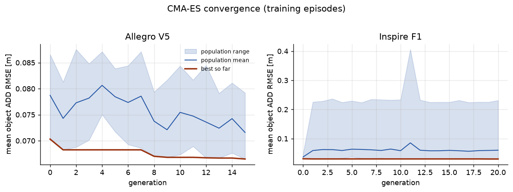
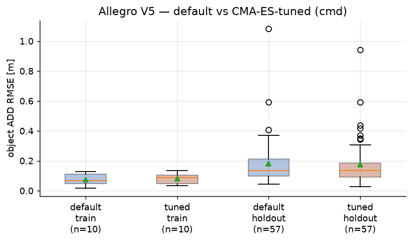
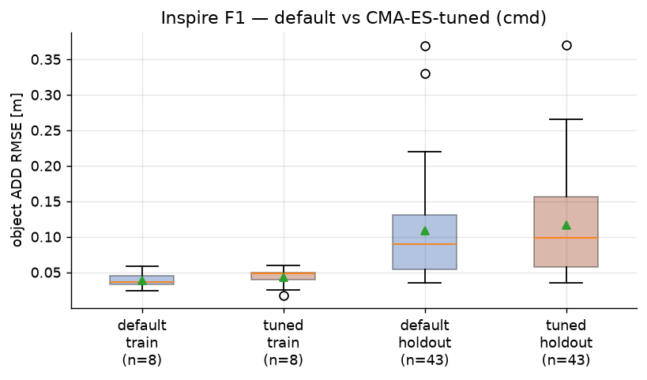
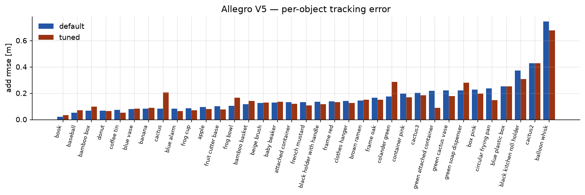
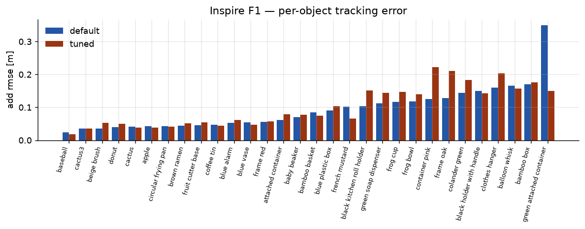
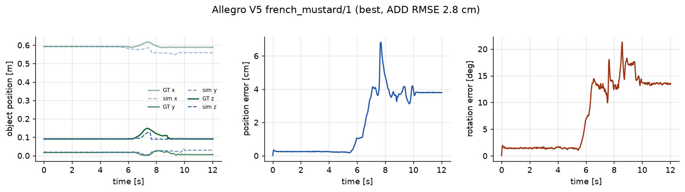
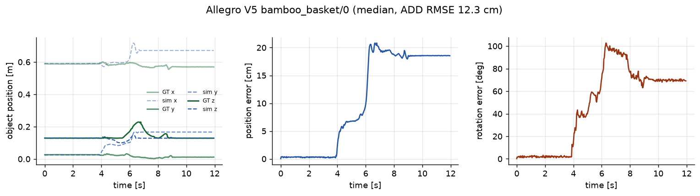
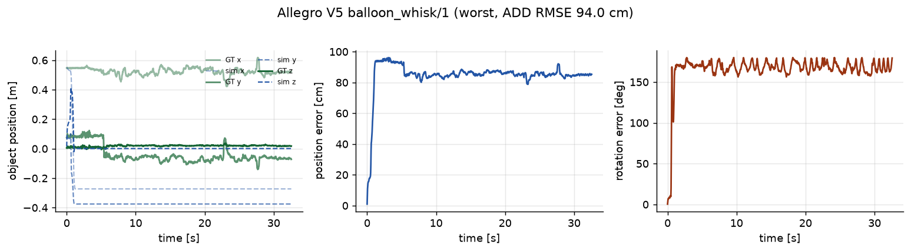
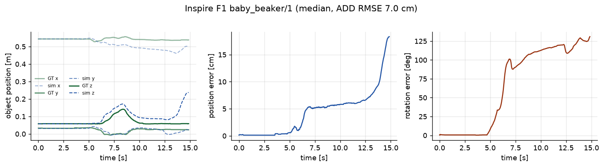
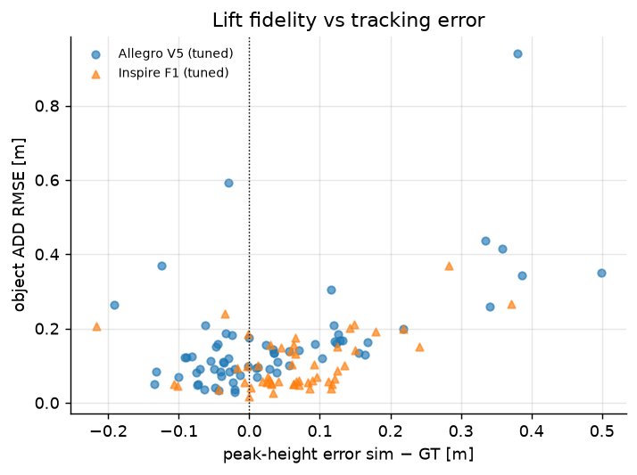

Dataset & setup
HRDexDB (SNU VCLab) provides ~2.1K real dexterous grasping sequences across 100+ scanned objects and multiple hand embodiments, with synchronized robot joint signals and 6D object tracking from a 23-camera rig. We use the two robot embodiments:
xArm6 + Wonik Allegro V5. Hand commands and measured joint states recorded at ~97 Hz in radians; arm joints at ~130 Hz.
xArm6 + Inspire F1 with 12 finger joints, 6 actuated + 6 linkage-coupled (URDF mimic joints). Raw counts converted to radians with the vendor mapping.
Per-video-frame 6D poses (~33 Hz) of the scanned object mesh, transformed into the robot base frame via the released camera-to-robot calibration.
We evaluate 120 episodes covering 35 objects (up to two scenes per object and hand). Every stream carries wall-clock timestamps on a shared epoch clock, so arm, hand, and object signals are time-aligned exactly, then resampled to a uniform 100 Hz control clock.
Method: dynamic replay, no cheating
Each episode is rebuilt as a Newton scene: the fixed-base xArm6+hand articulation imported from the
HRDexDB URDFs, the scanned object mesh as a free rigid body at the first ground-truth pose, and a
support plane at the object's initial resting height. The simulation runs
SolverMuJoCo (implicitfast, Newton solver, elliptic cones) at 400 Hz with Newton's
non-convex mesh contacts, and a 100 Hz control loop that writes the recorded joint trajectory into
Control.joint_target_q — nothing else touches the simulation.
Which signal should drive the robot?
The dataset stores both commanded and measured joint signals for the hands (the arm's commands are Cartesian end-effector poses, so the arm always follows measured joint positions). A pilot on five objects per hand compared the two as PD target sources:
| Hand | Target source | Episodes | ADD RMSE median [cm] | lift match |
|---|---|---|---|---|
| Allegro V5 | recorded commands | 10 | 6.6 | 90% |
| Allegro V5 | measured joints | 10 | 6.7 | 70% |
| Inspire F1 | recorded commands | 5 | 3.5 | 100% |
| Inspire F1 | measured joints | 5 | 3.7 | 100% |
Recorded commands track the real behavior at least as well and match the lift outcome more reliably — they are what the real controller received, including the intentional squeeze beyond contact that measured joint states hide. All headline results use commands.
CMA-ES calibration
Default gains and material parameters are not documented for this hardware, so we calibrate seven scalar parameters per hand with CMA-ES (log-space, population 8), minimizing the mean object ADD RMSE over five training episodes (banana, apple, baseball, book, beige brush — one scene each). Candidates are evaluated population-parallel in a multi-world Newton model with per-world gains, friction, mass, and armature. Allegro V5: 16 generations, 128 rollout sets, training ADD RMSE 7.0 → 6.6 cm · Inspire F1: 21 generations, 168 rollout sets, training ADD RMSE 3.1 → 3.0 cm.
| Parameter | Search range | Allegro V5 (tuned) | Inspire F1 (tuned) |
|---|---|---|---|
arm_ke | [500, 20000] | 564.5 | 2088 |
arm_kd | [10, 500] | 120.6 | 91.48 |
hand_ke | [5, 500] | 8.543 | 8.54 |
hand_kd | [0.1, 20] | 3.299 | 1.852 |
friction | [0.2, 2.5] | 0.5038 | 0.2579 |
object_mass | [0.03, 1] | 0.1278 | 0.1064 |
joint_armature | [0.001, 0.1] | 0.01227 | 0.05962 |

How much of the improvement is real? Winner's curse on a chaotic objective
Grasp outcomes are contact-chaotic: re-running the same episode with the same parameters in a fresh solver instance shifts ADD RMSE by up to ~10% (and can flip a marginal lift). Selecting the best of ~160 noisy evaluations therefore biases the reported optimum low. We revalidate the frozen tuned parameters with fresh rollouts on the training episodes:
| Hand | CMA-ES reported best [cm] | Tuned, revalidated [cm] | Defaults [cm] |
|---|---|---|---|
| Allegro V5 | 6.6 | 8.3 | 7.1 |
| Inspire F1 | 3.0 | 4.0 | 3.6 |
The revalidated tuned parameters perform close to the defaults on the training set — most of the apparent CMA-ES gain is selection noise, and the small holdout improvement below should be read in that light. This is itself a key result: within this parameter family, Newton's replay fidelity is not limited by poorly chosen gains or friction values; it is dominated by contact chaos, geometry approximation, and dataset calibration error.
Results
Aggregate object-tracking fidelity across all evaluated episodes (calibration outliers excluded; holdout = objects never seen by the tuner). ADD is the mean vertex distance between the simulated and ground-truth object pose — it penalizes both translation and rotation without symmetry ambiguity.
| Hand | Params | Episodes | ADD RMSE median [cm] | ADD RMSE mean [cm] | p90 [cm] | holdout median [cm] | pos RMSE median [cm] | rot RMSE median [°] | lift match |
|---|---|---|---|---|---|---|---|---|---|
| Allegro V5 | default | 67 | 12.7 | 16.5 | 28.7 | 13.5 | 12.1 | 57.4 | 93% |
| Allegro V5 | tuned | 68 | 12.3 | 16.0 | 31.7 | 13.7 | 11.9 | 63.7 | 91% |
| Inspire F1 | default | 51 | 6.6 | 9.7 | 17.1 | 9.0 | 6.7 | 32.8 | 96% |
| Inspire F1 | tuned | 52 | 7.0 | 10.5 | 20.2 | 9.9 | 6.4 | 41.3 | 94% |


Per-object breakdown


Representative episodes





Overlay videos
Headless ViewerGL renders with the ground-truth object pose overlaid as a translucent green
ghost (per-shape opacity from PR #3053).
The solid object is simulated; the ghost is where the real object actually was.
Honest limitations
- Grasp outcomes are chaotic. Millimeter-scale differences at contact onset flip episodes between firm grasp and slip. Repeated rollouts within one solver instance are nearly bit-stable, but fresh solver instances shift metrics by up to ~10% and can flip marginal lifts (4 episodes × 8 runs: within-instance ADD std ≤ 0.03 cm, 1 episode(s) with non-deterministic lift outcome). Median metrics over many episodes are the right lens, not single episodes.
- Geometry gap. URDF collision meshes of the hands and 2000-face decimations of the scanned objects approximate the real contact geometry; fingertip compliance (rubber pads, tactile skins) is not modeled.
- Unknown object inertia. Object masses are not released with the dataset; a single tuned mass scale per hand is a crude stand-in for per-object mass.
- Calibration and tracking noise. Object 6D tracking and camera-to-robot calibration carry errors of up to a few centimeters in places; two episodes were auto-flagged as calibration outliers by the palm-distance check.
- Mimic-joint approximation. The Inspire F1 linkage is modeled through URDF mimic constraints rather than the real four-bar mechanics.
Reproduce
All code lives on the eric/hrdexdb-replay branch of
eric-heiden/newton under scripts/hrdexdb/.
git clone -b eric/hrdexdb-replay https://github.com/eric-heiden/newton cd newton && uv sync --extra examples && uv pip install huggingface_hub cma imageio-ffmpeg git clone https://github.com/snuvclab/HRDexDB ~/repos/HRDexDB # robot URDFs cd scripts/hrdexdb uv run python download_all.py # fetch episodes (no videos) uv run python replay.py --hand allegro_v5 --object banana --scene 2 uv run python tune.py --hand allegro_v5 # CMA-ES calibration uv run python evaluate.py --hand allegro_v5 --tag tuned --params results/tuned_params_allegro_v5_cmd.json uv run python render.py --hand allegro_v5 --object banana --scene 2 # overlay video